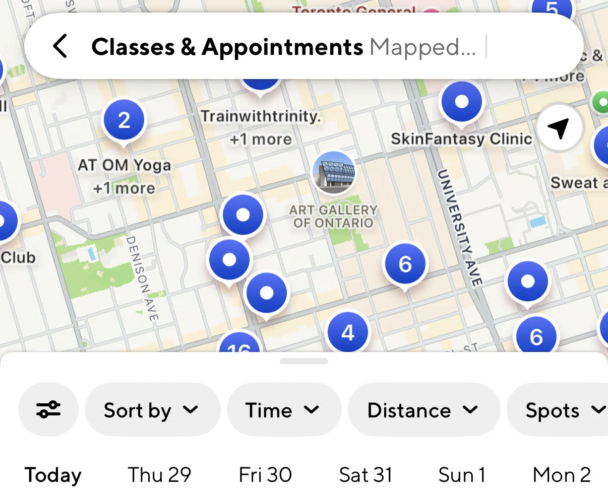

Project / 03
ClassPass teardown
An independent product analysis exploring clearer credit pricing and better ways to use a remaining ClassPass balance.
- Role
- Independent product analysis

Overview
An independent product analysis exploring clearer credit pricing and better ways to use a remaining ClassPass balance.
Personal analysis from using ClassPass as a customer. Credit clarity is a proposal, not a shipped feature or a validated result.
Problem
ClassPass gave me flexibility to try different studios while staying in Toronto for a few months. Its trial, class filters, and short-term flexibility worked well for me, but unpredictable credit costs made planning harder. In my experience, classes I liked could rise in credits until the savings over a drop-in class felt small. It was also unclear how to spend a small remaining balance, and reviews were difficult to filter by instructor and class combination.
Approach
I proposed credit clarity: show a class’s typical credit range and a short explanation when its price is higher than usual, such as a popular time slot. A use-your-last-credits suggestion would surface classes or items that fit the remaining balance before credits expire. I also considered a weekly planner and a membership bundle for a small group of higher-priced studios. The main proposal focuses on helping members understand pricing and use the plan they already pay for.
Outcome
This is an independent proposal. I have not measured a change in retention or credit use. I would track the share of members who use most of their credits before expiry, supported by rebooking rates and support contacts about credit pricing. The main tradeoff is balancing member trust with studios’ ability to respond to demand. I would guard against cluttered search results and monitor class fill rates, studio revenue, and member cancellations.
Links
- No public project links yet.